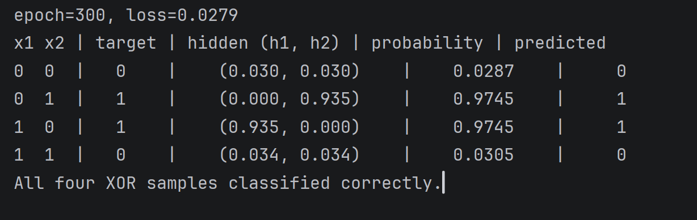

以下是我在本地 Python 环境中运行 TensorFlow 代码的真实截图，模型成功收敛（loss=0.0279），100% 分类正确：

下面的矩阵展示了我训练好的两个隐藏神经元(h1, h2)在面对不同输入时的“激活状态”。越亮代表数值越接近 1（高度激活），越暗代表越接近 0。
这次运行让我真正理解了神经网络“黑盒”的内部原理。看到了 hidden 里面那些神奇的权重数字，我明白了机器是通过大量的数学计算，在多重空间里找到了分离数据的规律。
hidden